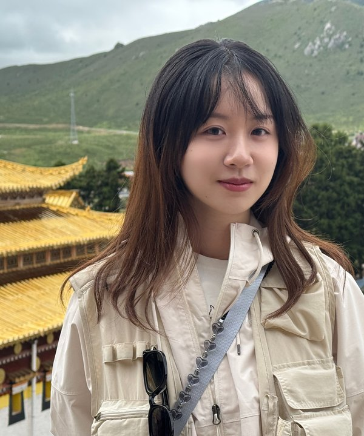
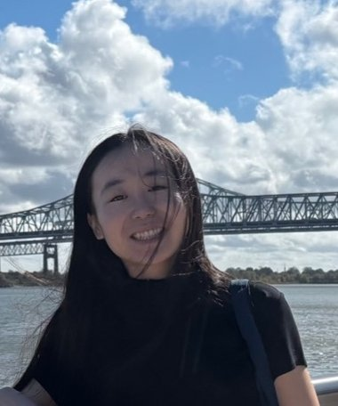
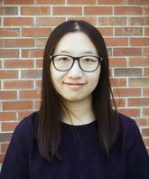

Su Jeong Jo is a PhD student in Urban and Regional Planning at the University of Florida. She holds a B.Arch. and M.D.S. in Architecture from Hanyang University in South Korea and a Master of Regional Planning (MRP) from Cornell University. Her research examines how generative AI can support planning decision-making, with a focus on land use and environmental planning and urban regeneration. Her current work develops a generative deep learning model that produces future land-use scenarios for local communities in Florida. Outside of research, she enjoys photography, listening to music, and trying different coffees. She also likes cooking and trying out new recipes.
“It has been more than a year since I joined the Urban Agility and Resilience Lab, and the biggest thing I’ve gained is a supportive community to grow with as a researcher. A PhD can be a long journey of struggling with research ideas and figuring out the right direction. What I appreciate most is how Dr. Wang and my labmates communicate openly and discuss each other’s work, which has helped me clarify my next steps and build confidence in my own research. I look forward to more collaborations with the lab in the future.”

RJRui Jiang is a first-year PhD student at the University of Florida with a concentration in Urban and Regional Planning. She holds a bachelor’s degree in Environmental Science from Franklin & Marshall College and a master’s degree in Applied Geosciences from the University of Pennsylvania, where she also earned a Spatial Analysis and GIS Certificate from the Weitzman School of Design. Drawing on her environmental and spatial analysis background, her research interests include health-related accessibility and broader infrastructure planning. She joined Dr. Wang’s lab in Fall 2026 and is currently conducting accessibility-related research. Outside of research, Rui enjoys reading Keigo Higashino’s novels while petting her Shiba Inu.
“My transition from environmental science and engineering to urban planning grew out of a desire to address problems closer to everyday life. I joined Dr. Wang’s lab to bring my environmental and spatial analysis background to questions of urban resilience. As a new member, I am learning from my advisor and fellow lab members how to approach these issues through a planning lens, ask better research questions, and explore ways to address them.”

BDBetty Ding joined UARL as a postdoctoral researcher in Summer 2026. She received her PhD in Civil Engineering, MS in Data Analytics Engineering, and BS in Mathematics, all from Northeastern University. Her research explores human and community resilience to disruptions, with a particular focus on mobility and long-run urban planning. She is currently developing AI-assisted planning models to help inform long-term adaptation planning. She is interested in understanding how individuals and urban systems adapt, reorganize, and develop more resilient and adaptive futures. Outside of work, she likes reading, writing, cats, coffee, music, the gym, the beach, and deep conversations, and she enjoys skiing and snowboarding.
“UARL is helping me develop an interdisciplinary research identity connecting human behavior, urban planning, resilience, and adaptation. I am encouraged to think more broadly and deeply about how to support communities facing long-term environmental challenges in real life from a planning perspective.”
Ziyi received her PhD in Urban and Regional Planning from the University of Florida in 2026, where she was a member of the Urban Agility and Resilience Lab under the guidance of Dr. Yan Wang. Her dissertation is titled “Social Infrastructure Resilience under Environmental Shocks: Interdependence of Small Businesses and Local Communities through Spatial Interaction.” She also holds a master’s degree in Urban and Regional Planning from the University of Michigan and a bachelor’s degree in Urban Management from the Central University of Finance and Economics. She is now a Visiting Assistant Professor in the Department of Urban and Regional Planning. Outside of research, Ziyi enjoys exploring good food and watching musicals.
During her time at UARL, she worked on several NSF-funded projects on small business resilience, EV charging equity, and disaster preparedness. Her work focuses on the intersection of urban resilience planning, disaster risk, and social equity. Ziyi’s research examines how socioeconomic vulnerability and spatial planning jointly shape community resilience to environmental hazards. She grounds her work in classical urban theory and spatial econometrics to address challenges in disaster resilience and local economic vitality. Drawing on large-scale data, she applies emerging tools such as GeoAI, large language models, and agent-based modeling. Her research has assessed the vulnerability of social infrastructure networks, including small businesses and EV charging stations, in hazard-prone communities. She also focuses on topics including planning evaluation, post-disaster commercial land use change, scenario-based approaches to equitable infrastructure and land use planning, and the role of time poverty in disaster preparedness. Her future work will continue to advance research on social infrastructure resilience under environmental stressors.
“From the first meeting to the final defense, Dr. Wang shaped how I think and work. Thank you for being the best of advisors and the best of mentors, whose lessons I will carry with me for the rest of my career.”
Shangde Gao is a Postdoctoral Associate at the University of Florida’s School of Architecture, affiliated with the SHARE Lab and the Florida Institute for Built Environment Resilience (FIBER). Shangde was a Ph.D. student at the Urban Agility and Resilience Lab under Dr. Wang’s supervision from August 2019 to May 2024, after which he worked as a Postdoctoral Associate in the lab until May 2025. His Ph.D. dissertation is titled “Data-driven multi-scale risk analytics and communication for weather extreme response and climate adaptation.” During his Ph.D. program, his research leveraged data-driven and AI technologies to examine risks and resilience at individual and community levels in response to extreme weather events and climate change. He also explored crisis informatics and designed strategies for targeted misinformation mitigation during emerging events, such as the COVID-19 pandemic. Currently, through the Florida Digital Twin (FLDT) project, his research spans three interacting directions: extracting local knowledge through AI-based urban analytics, tailoring AI tools to planners’ and designers’ tasks, and fusing local knowledge with heterogeneous data into digital twin development. Shangde earned his PhD in Urban and Regional Planning from UF in 2024. He enjoys listening to podcasts about news and crime events while driving, and walking along the riverside.
“My time in the Urban Agility and Resilience Lab taught me to approach unfamiliar research directions and skills with curiosity rather than hesitation. It also taught me resilience in a broader sense, not merely as a concept I study, but as a disposition I carry into both life and work.”
Haiyan Hao received her PhD in Urban and Regional Planning from the University of Florida in Spring 2023. She is currently an Assistant Professor at CUHK-Shenzhen. Her research leverages urban computing and advanced analytics to build smart, resilient communities capable of withstanding technological disruptions and extreme events. Her recent research has focused on applying spatio-temporal knowledge graphs to urban management and public services, aiming to bridge the gap between data science and sustainable planning policies. Outside of research, she is an enthusiast of cartoons and city walks, finding inspiration in both digital stories and real-world urban landscapes.
“My time in previous research labs was pivotal in shaping my academic identity. It taught me that rigorous quantitative analysis must ultimately serve human needs. The collaborative environment instilled in me a deep commitment to interdisciplinary problem-solving, a value that now defines my mentorship style.”

FYFang Yao was a PhD student in Urban and Regional Planning and also pursued a master’s degree in Computer Science at the University of Florida. Her research focused on urban computing and land use modeling using machine learning techniques, especially natural language processing methods. She is an expert in Geographic Information Systems and Python programming. She also has rich experience in data analysis and visualization. Fang enjoys traveling in her spare time.
Postgraduate placement: Software Engineer at Nordstrom in Seattle, Washington, United States.